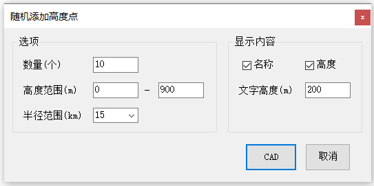

功能简介
【随机添加高度点】在指定中心点与半径范围内随机生成带高度的点（模拟障碍物点），常用于净空评估的测试与演示数据。可设置高度范围、数量与文字高度，并选择是否显示名称、高度。
界面预览

界面元素
| 分区 / 控件 | 说明 |
|---|---|
| 高度范围(m) | 随机点高度的起止范围（默认 0 ~ 900 m）。 |
| 文字高度(m) | 点旁标注文字的高度（默认 200 m）。 |
| 半径范围(km) | 以拾取中心点为圆心、随机布点的半径（默认 5 km）。 |
| 数量(个) | 生成的随机点数量（默认 10 个）。 |
| 显示内容 · 名称 / 高度（复选框） | 是否在点旁标注名称、高度值。 |
| CAD（按钮） | 按提示在图面拾取中心点后生成随机点。 |
| 取消（按钮） | 关闭窗口。 |
操作步骤
- 命令行输入
Y92_RandomPoint打开窗口。 - 设置高度范围、半径范围与数量，并勾选需要的显示内容（名称 / 高度）。
- 点击【CAD】，按提示拾取中心点，程序在半径范围内随机布点。
提示：生成的随机点可用于后续净空 / 越障评估窗口的障碍物穿透检查演示。